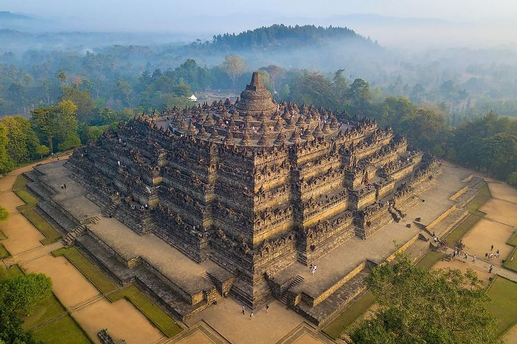

Temukan sejarah, arsitektur, dan kisah-kisah yang terukir di salah satu candi terbesar dan paling megah di Indonesia.
Shanelle - 91 - 01
Candi Borobudur adalah candi Buddha terbesar di dunia yang terletak di Magelang, Jawa Tengah. Dibangun berabad-abad lalu, candi ini memiliki relief dan stupa yang menceritakan perjalanan kehidupan, ajaran Buddha, dan sejarah yang kaya.

Lihat Detail Lainnya →Jl. Badrawati, Kw. Candi Borobudur, Borobudur, Kec. Borobudur, Kabupaten Magelang, Jawa Tengah. Berjarak sekitar 40 kilometer atau 1,5 jam perjalanan dari arah Yogyakarta
Candi Borobudur buka setiap hari pk 07:00 sampai pk 17:00.
Area parkir luas, pusat informasi, pemandu wisata, dan toko suvenir.
Candi Borobudur adalah salah satu monumen Buddha terbesar dan paling megah di dunia. Dikenal sebagai simbol kejayaan arsitektur dan seni budaya dari masa lalu, Candi Borobudur memiliki sejarah yang kaya dan cerita mendalam yang tercermin dalam setiap batu dan reliefnya.
Secara struktur arsitektur, Candi Borobudur terbagi menjadi tiga tingkatan utama yang mencerminkan
konsep Kamadhatu, Rupadhatu, dan Arupadhatu. Tingkatan paling bawah yaitu Kamadhatu melambangkan dunia
manusia yang masih terikat oleh hawa nafsu dan keinginan duniawi. Naik ke bagian tengah terdapat
Rupadhatu yang melambangkan dunia wujud, di mana manusia mulai dapat membebaskan diri dari hawa nafsu
namun masih terikat oleh rupa dan bentuk. Bagian tertinggi adalah Arupadhatu yang melambangkan dunia
tanpa wujud, yaitu tingkatan tertinggi tempat manusia mencapai kebebasan sejati dan pencerahan spiritual
tanpa terikat dengan rupa fisik.
Borobudur dihiasi oleh ribuan panel relief yang terukir indah
dengan sangat detail dan bernilai seni tinggi. Relief-relief ini tidak hanya berfungsi sebagai elemen
dekoratif arsitektur, tetapi juga memuat kisah-kisah kitab suci agama Buddha seperti Lalitavistara,
Jataka, dan Awadana. Setiap relief menceritakan ajaran moral, perjalanan hidup Sang Buddha, serta
gambaran kehidupan masyarakat Jawa kuno pada masa pembuatan candi tersebut. Selain relief yang
menakjubkan, terdapat ratusan arca Buddha yang ditempatkan di dalam ceruk-ceruk dinding serta di dalam
stupa berlubang yang berada di teras melingkar puncak candi.
Sebagai warisan budaya dunia yang telah diakui oleh UNESCO, Candi Borobudur menyimpan daya tarik luar biasa bagi wisatawan lokal maupun mancanegara. Setiap harinya, ribuan pengunjung datang untuk mengagumi keindahan arsitektur kuno, menikmati pemandangan matahari terbit yang mempesona, serta mempelajari sejarah kebudayaan Indonesia. Keberadaan candi ini menjadi bukti nyata keahlian tinggi para leluhur dalam bidang seni pahat, teknik sipil, dan astronomi pada zaman dahulu. Menjaga dan melestarikan keberadaan Candi Borobudur merupakan tanggung jawab bersama agar keindahan dan nilai sejarahnya tetap dapat dinikmati oleh generasi mendatang.